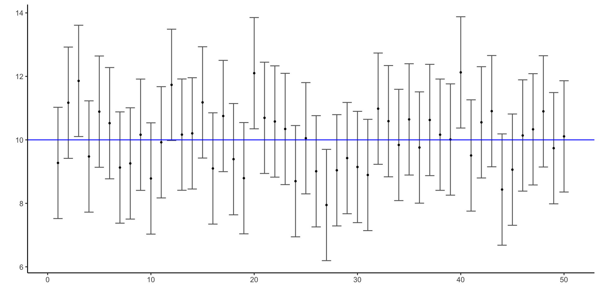

[1] 1.959964[1] -1.959964University of Toronto
July 30, 2023
Definition 1 (Confidence Interval)
Let \(\alpha\) be a number between 0 and 1.
The interval \((\ell_n, u_n)\) where \(\ell_n = g(x_1,...,x_n)\) and \(u_n = h(x_1,...,x_n)\) is called a
\(\bf{100(1-\alpha)\%}\) confidence interval for \(\bf{\theta}\)
if there exists \(\ell_n = g(X_1,...,X_n)\) and \(U_n = h(X_1,...,X_n)\) that satisfy
\[ \Pr(L_n < \theta < U_n)=1-\alpha \;\text{ for every value of } \theta \]
\(1-\alpha\) is the confidence level.
Definition 2 (Conservative onfidence nterval)
If \[P(L_n < \theta < U_n)\geq 1-\alpha\] for every value of \(\theta\), we say the resulting confidence interval is conservative.
The actual confidence level might be higher, but \(L_n\) and \(U_n\) can only be found to give a lower bound.
Suppose \(\alpha = 0.05\). Then the confidence of level is \(95\%\).
The confidence level is the probability that we get an interval that includes \(\bf{\theta}\).
\[ \; \]
“We are \(95\%\) confident that the true value of \(\theta\) is between between \(\ell_n\) and \(u_n\).”
\[ \; \]
When interpreting confidence intervals, always remember …
Example: A sample of \(30\) widgets is taken off an assembly line for quality control and the diameter of each is measured. A \(95\%\) confidence interval for the mean diameter is \((10.1, 14.5)\) cm.
Which of these statements are correct?
Suppose our data \(x_1,...,x_n\) is a realization of a random sample, \(X_1, ..., X_n\), and we want to find a confidence interval for the mean, \(\mu =\mathbb{E}[X_i]\).
Recall: For a random variable \(Y\) with \(\mathbb{E}[Y]=\mu_Y\) and \(\text{Var}(Y)=\sigma_Y^2\), Chebyshev’s inequality states
\[ \Pr\left( \lvert Y-\mu_Y \rvert < k\sigma_Y \right)\geq 1-\frac{1}{k^2} \]
\(\widehat{\mu}\) is in the interval \(({\mu}-2\sigma, {\mu}+2\sigma)\) with probability greater than \(0.75\)
\({\mu}\) is in the interval \((\widehat{\mu}-2\sigma, \widehat{\mu}+2\sigma)\) with probability greater than \(0.75\)
\(\mu \in (\widehat{\mu}-2\sigma, \widehat{\mu}+2\sigma)\) with confidence greater than 75%.
This is a very conservative interval.
Exercise 1 What is a conservative confidence interval for \(\widehat{\mu}=\bar{X}_n\) being within \(2\sigma\), where \(\mathbb{E}[X_i]=\mu\) and \(\text{Var}(X_i)=\sigma^2\)?
Suppose \(X_1, ..., X_n \overset{iid}{\sim} \text{N}(\mu,\sigma^2)\) with known \(\sigma^2\).
Consider estimating \(\mu\) with \(\bar{X}_n\).
We want to derive the confidence interval at the \(1-\alpha\) level.
What is the sampling distribution of \(\bar{X}_n\)? … standardized?
Confidence intervals rely on quantiles in the tails of a sampling distribution.
Definition 3 A critical value \(z_p\) of a standard normal distribution, \(\text{N}(0,1)\), is defined as the value such that
\[ \Pr(Z\geq z_p)=p \]
So \(z_p\) is the \((1-p)^{th}\) quantile of \(\text{N}(0,1)\).
\[ \Pr\left( -z_{\alpha/2} < \frac{\bar{X}_n-\mu}{\sigma/\sqrt{n}}< z_{\alpha/2} \right)=1-\alpha \]
Example 1 What is the \(95\%\) confidence interval for \(\mu\)?
For a random sample \(X_1, ..., X_n\) such that \(X_i\overset{iid}{\sim} \text{N}(\mu,\sigma^2)\) with known \(\sigma^2\),
\[ \frac{\bar{X}_n-\mu}{\sigma/\sqrt{n}}\sim\text{N}(0,1) \]
Then the \(100(1-\alpha)\%\) confidence interval for \(\mu\) is
\[ \left(\bar{x}_n - z_{\alpha/2} \frac{\sigma}{\sqrt{n}} ,\; \bar{x}_n + z_{\alpha/2} \frac{\sigma}{\sqrt{n}}\right) \]
… of \(\bar{X}_n\)?
\[ \bar{X}_n \sim \text{N}\left( \mu,\frac{\sigma^2}{\sqrt{n}} \right) \]
… of \(S_n^2\)?
\[ \sum_{i=1}^n \left( X_i -\bar{X}_n \right)^2 \sim \sigma^2 \mathcal{\chi}^2_{n-1} \]
… of \(\frac{\bar{X}_n-\mu}{S_n/\sqrt{n}}\)?
\[ \frac{\bar{X}_n-\mu}{S_n/\sqrt{n}} \sim t_{n-1} \]
The \(t\) distribution has one parameter, called the degrees of freedom.
\(\frac{\bar{X}_n-\mu}{S_n/\sqrt{n}}\) is called the studentized mean.
To calculate probabilities from the CDF of the \(t\) distribution, use the function pt().
Example: \(\Pr(T > 0.5)\)
To calculate quantiles (or critical values) from the \(t\) distribution, use the function qt(p, df).
Example: \(n=10\)
For a random sample \(X_1, ..., X_n\) such that \(X_i \overset{iid}{\sim} \text{N}(\mu,\sigma^2)\) with unknown \(\sigma^2\),
\[ \frac{\bar{X}_n-\mu}{S_n/\sqrt{n}}\sim t_{n-1} \]
Then the \(100(1-\alpha)\%\) confidence interval for \(\mu\) is
\[ \left(\bar{x}_n - t_{n-1,\;\alpha/2} \frac{s_n}{\sqrt{n}} ,\; \bar{x}_n + t_{n-1,\;\alpha/2} \frac{s_n}{\sqrt{n}}\right) \]
What if the random sample is not drawn from a Normal distribution?
Input
Repeat the following for each of \(b=1,...,B\):
Output
\(T_{n,1}^*, ..., T_{n,B}^*\)
For \(X_1, ..., X_n \overset{iid}{\sim}F\) with \(\mathbb{E}[X_i]=\mu\),
\[ P\left( c_l^* < \frac{\bar{X}_n^* - \mu^*}{S_n^*/\sqrt{n}}< c_u^* \right) \approx 1-\alpha \]
Then the \(100(1-\alpha)\%\) bootstrap confidence interval for \(\mu\) is
\[ \left(\bar{x}_n - c_u^* \frac{s_n}{\sqrt{n}} ,\; \bar{x}_n - c_l^* \frac{s_n}{\sqrt{n}}\right) \]
Consider estimating \(\mu\) with \(\bar{X}_n\).
We want to derive the confidence interval at the \(1-\alpha\) level.
For large \(n\), the sampling distribution of \(\bar{X}_n\) is approximately Normal.
\[ \frac{\bar{X}_n-\mu}{\sqrt{\text{Var}(X_i)/ n}}\sim\text{N}(0,1) \]
Estimate \(\text{Var}(X_i)\) with \(S_n^2\).
How does this relate to the studentized mean?
Suppose the data \(x_1,...,x_n\) are realizations of a random sample \(X_1, ..., X_n\), drawn from a distribution with cdf \(F\) and expectation \(\mu\).
If \(n\) is large, then the approximate \(100(1-\alpha)\%\) confidence interval for \(\mu\) is
\[ \left(\bar{x}_n - z_{\alpha/2} \frac{s_n}{\sqrt{n}} ,\; \bar{x}_n + z_{\alpha/2} \frac{s_n}{\sqrt{n}}\right) \]
If \(X_i\sim \text{Normal}\), \(\text{Var}(X_i)=\sigma^2\):
\[ \bar{x}_n \pm z_{\alpha/2} \frac{\sigma}{\sqrt{n}} \]
If \(X_i\sim \text{Normal}\), \(\widehat\sigma=S_n\):
\[ \bar{x}_n \pm t_{n-1,\;\alpha/2} \frac{s_n}{\sqrt{n}} \]
If \(n\) is large:
\[ \bar{x}_n \pm z_{\alpha/2} \frac{s_n}{\sqrt{n}} \]
If unsure:
… bootstrap.
This will give us an idea of how confidence intervals can vary with the data.
Generate \(95\%\)-confidence intervals for \(200\) datasets, each a sample size of \(20\) drawn from a \(N(10,4)\) distribution.
# Store the CI limits for B samples
CIs <- tibble("sampmean" = numeric(B),
"lowerlimit" = numeric(B),
"upperlimit" = numeric(B))
# Generate confidence intervals
for (i in 1:B){
sampdata <- rnorm(n, mu, sigma)
CIs[i,1] <- mean(sampdata)
CIs[i,2] <- mean(sampdata) - critval*sigma/sqrt(n)
CIs[i,3] <- mean(sampdata) + critval*sigma/sqrt(n)
}
# Display first 5 rows
head(CIs, 5)# A tibble: 5 × 3
sampmean lowerlimit upperlimit
<dbl> <dbl> <dbl>
1 9.27 7.52 11.0
2 11.2 9.42 12.9
3 11.9 10.1 13.6
4 9.48 7.72 11.2
5 10.9 9.14 12.6Would that work out so perfectly for every set of samples? What about smaller sample size?
Plot the first \(50\) confidence intervals, along with the sample mean for each.

How do the intervals change for smaller (or larger) values of \(\alpha\)?
What is the sampling distribution of \(\widehat{p}\)?
\[ \; \]
How can we use this sampling distribution to find a confidence interval?
Exercise 2 Poll 955 people and 0.46 of respondents say they would vote for your candidate. Could your candidate get a majority of votes?
If we can find another random variable that
then we can construct a confidence interval.
Random variables that satisfy these criteria are called pivots.
Example 2 Say we have a random sample \(X_1, ..., X_n\overset{iid}{\sim}\text{N}(\mu,\sigma^2)\), but we do not know \((\mu,\sigma^2)\). We want a confidence interval for \(\mu\).
Then
\[ h(X_1,...,X_n|\mu)=\frac{\overline{X}_n-\mu}{S_n/\sqrt{n}} \]
is a pivot, because \(h(X_1,...,X_n|\mu)\sim t_{n-1}\) does not depend on any unknown parameters.
Example 3 Say we have a random sample \(X_1, ..., X_n\overset{iid}{\sim}\text{N}(\mu,\sigma^2)\), but we do not know \((\mu,\sigma^2)\). We want a confidence interval for \(\sigma\).
Recall: \[ (n-1)S_n^2=\sum_{i=1}^n \left( X_i -\bar{X}_n \right)^2 \sim \sigma^2 \cal{\chi}^2_{n-1} \]